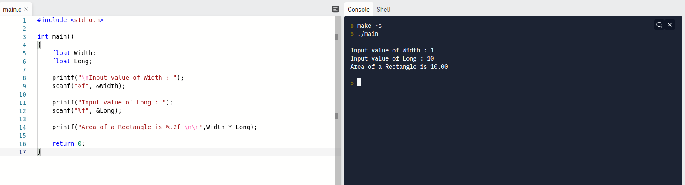

ภาษา C เป็นภาษาที่มีความเก่าแก่มากที่สุด เรียกได้ว่าเป็นภาษาแรกๆ ที่ใช้วำหรับการพัฒนาโปรแกรมให้กับเครื่องคอมพิวเตอร์ ภาษายังคงถูกใช้งาน
เป็นจำนวนมากในปัจจุบัน เพราะว่าเป็นภาษาที่มีขนาดเล็ก และเร็วที่สุด เนื่องจากภาษา C เป็นภาษาที่มีความใกล้เคียงกับภาษาเครื่องมากที่สุด(Machine Language)
ภาษายังมีขนาดเล็ก เพราะถูกพัฒนาขึ้นมาในช่วงที่เครื่องคอมพิวเตอร์ยังมีหน่วยความจำหลักเพียงแค่หลัก byte ถึง kbyte เท่านั้น ไม่ได้มีหลัก Gigabyte เหมือนในปัจจุบัน
ทำให้เหมาะมาก สำหรับเอาไว้เขียนโปรแกรมให้กับโปรแกรมแบบฝัง ที่ไม่จำเป็นต้องมีการอัพเดตบ่อยๆ เช่น BIOS และยังสามารถที่จะเขียนโปรแกรมให้กับ
อุปกรณ์ที่มีหน่วยความจำที่น้อยได้อีกด้วย

ส่วนอธิบาย
- #include <studio.h> คือ library ของภาษา C มีหลาย library ให้เลือกใช้งานในการพัฒนาโปรแกรม
- int main() คือ การกำหนดชื่อฟังกฺชั่นเริ่มต้น โดยที่เมื่อกดรันด์โปรแกรม ฟังก์ชั่นตัวนี้จะถูกรันในทันที
- float variableName คือ การกำหนดให้ตัวแปรที่ต้องการเก็บค่าเป็นเลขจำนวนจริง
- printf("Text") คือ การแดสงผลข้อความใดๆ ก็ได้ใน Terminal
- scanf("%f", &"variableName") คือ การรับค่าจากแป้นพิมพ์ หรือผู้ใช้งานโปรแกรม โดยที่ตัวแปรด้านหลังจะทำการเก็บค่าที่ใส่เข้ามาให้
- printf("Area of a Rectangle is %.2f \n\n",Width * Long); คือ บรรทัดที่ใช้สำหรับการคำนวณค่าที่ผู้ใช้งานใส่เข้ามา และส่งออกไป
- return 0 คือ การส่งค่าออกจากโปรแกรมให้กลายเป็น 0 หรืออีกนัยหนึ่ง คือ การล้างค่าที่ผู้ใช่ใส่มาตั้งแต่แรก
- -> โค้ดด้านบนเป็นสูตรการหาค่าพื้นที่ของสี่เหลี่ยมผืนผ้า(กว้างxยาว)
- -> ด้ายซ้าย คือ ส่วนที่ใช้ในการเขียนโค้ด ด้านขวา คือ Terminal ที่ใช้ในการแสดงผลการรันด์ของโค้ด
- -> Online Code Editor ตัวนี้ชื่อ replit